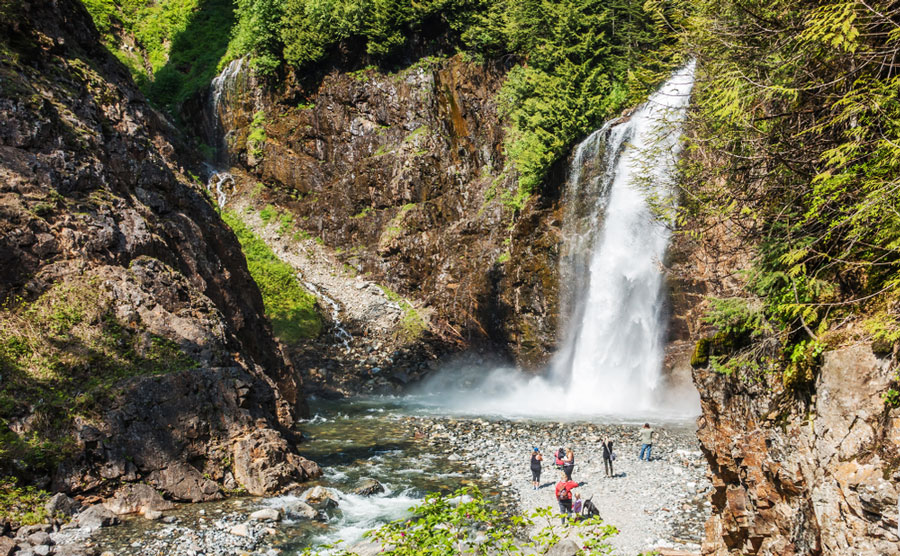
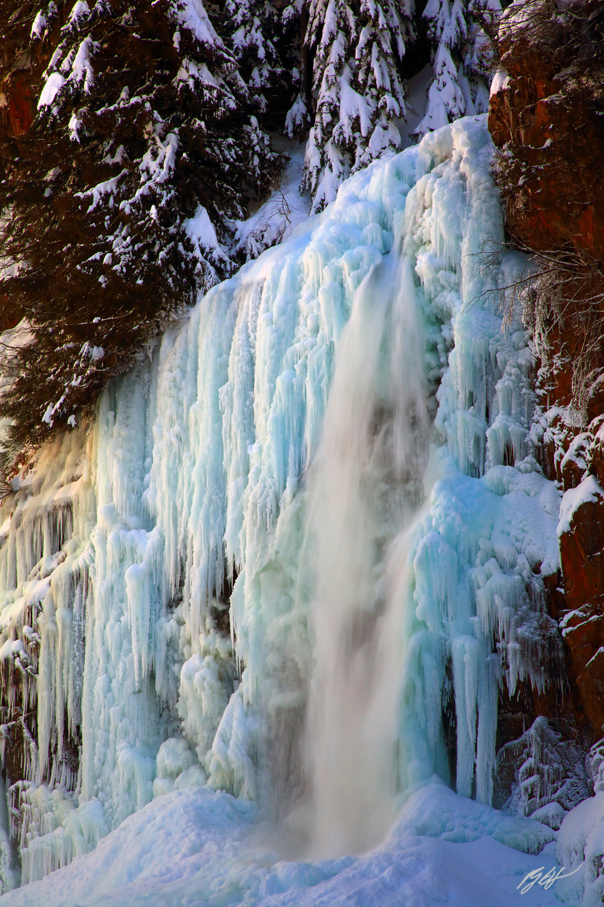
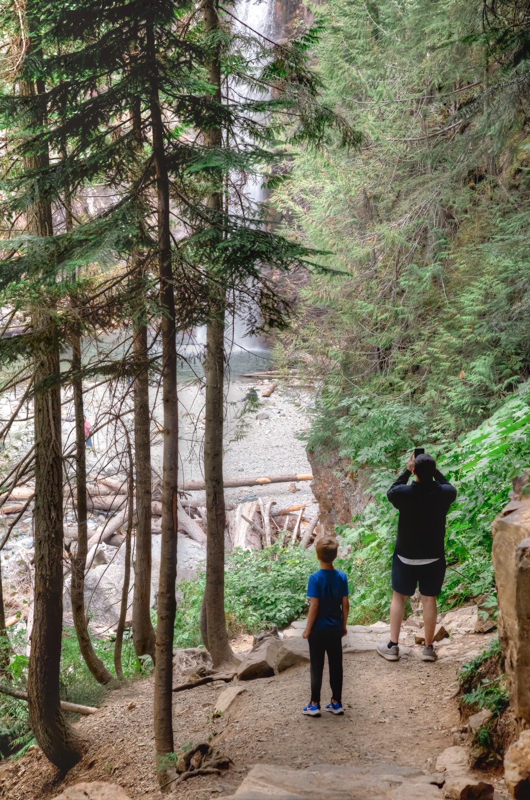
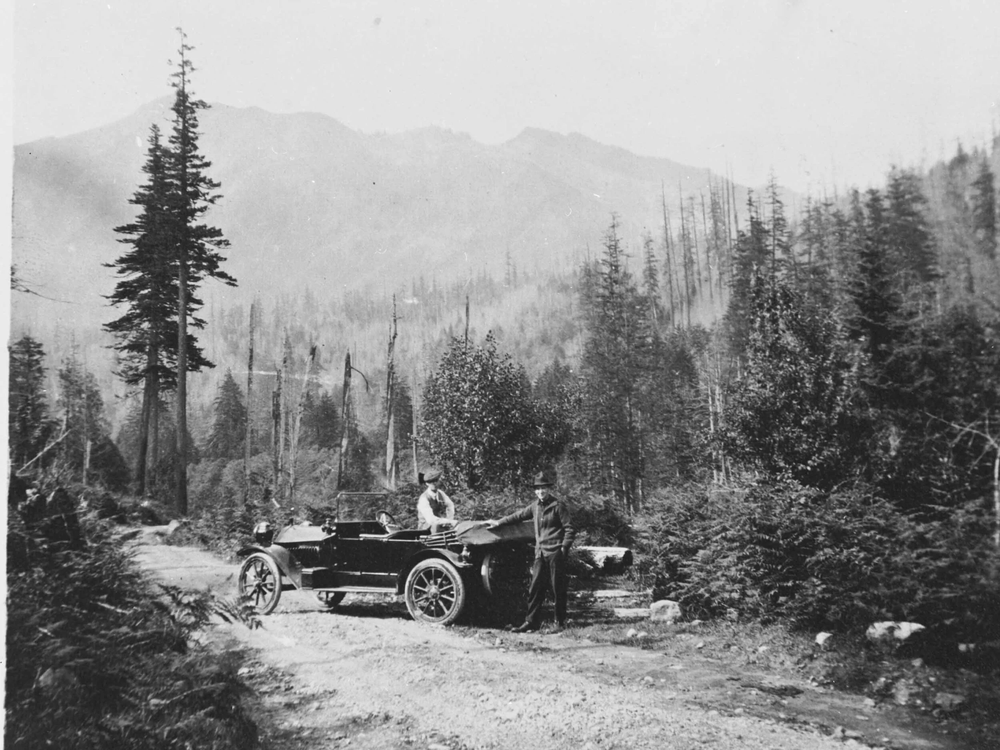
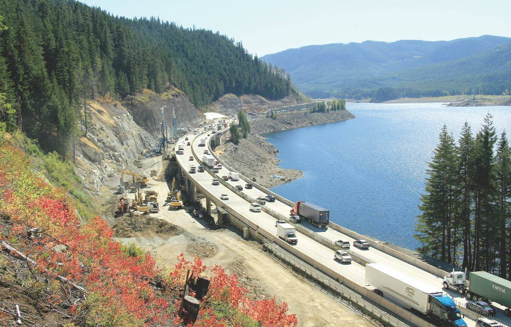
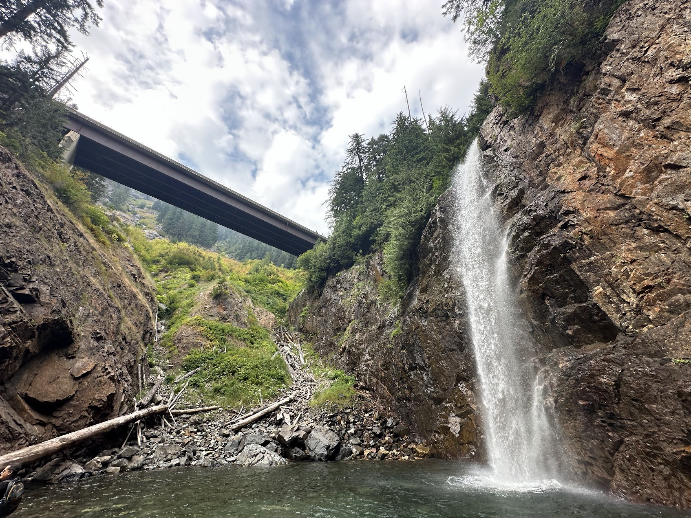
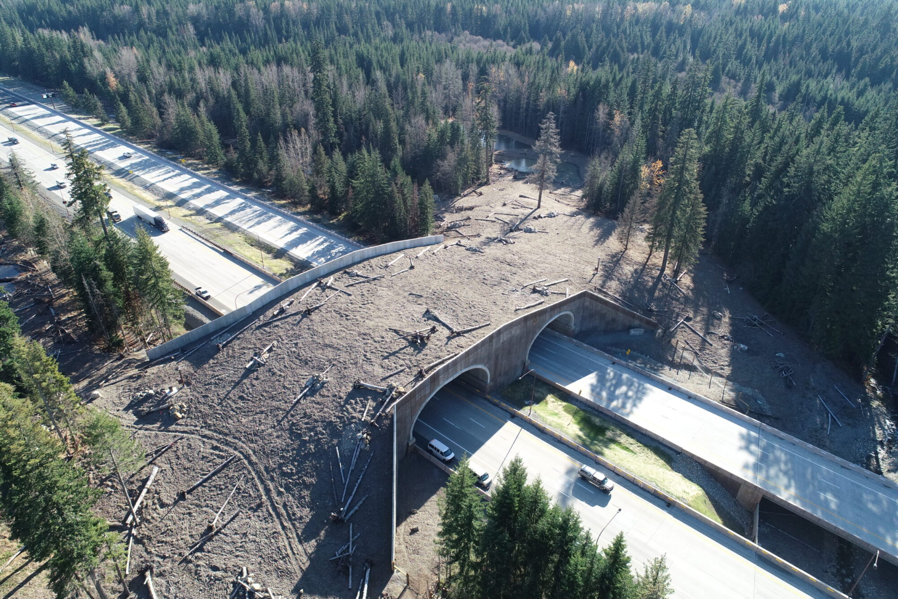

Driving east on I-90 past North Bend, the mountains close in and the road bends with them. Just before the Snoqualmie Pass ski area, the highway crosses a long concrete bridge over a forested valley. The guardrails block the view. Most people just keep driving.
But if you glance sideways as you cross — there's a canopy of conifers far below, and a creek catching the light between the trees.
Take Exit 47, turn left, turn left again, follow a gravel forest road for a couple of miles. The parking area is on the right. From there you walk into the trees, the ground goes damp, the air smells of pine needles and wet soil. The creek runs alongside the trail, sometimes visible, sometimes hidden by brush, always audible. About a mile in, the canyon narrows, the sound gets louder, and then you round a boulder and the falls are right there.
Franklin Falls drops in three tiers. Wikipedia and the Washington Trails Association put the total height at 135 feet; Northwest Waterfall Survey's field measurement comes out to 151 feet, the difference depending on where you start measuring. The top tier is a 15-foot block-shaped drop tucked north of the highway, invisible to most visitors. The middle tier fans out into a 25-foot cascade that spreads into a green-tinted pool. The bottom tier slides 25 feet down the rock face before plunging a final 70 feet — the drop you actually see from the base of the trail.
Standing at the base, mist hits your face and you have to lean close to be heard. The cliff is covered in moss, deep green, like velvet. In spring, when the snowpack melts, the volume can reach twenty times what it is in August or September — water explodes through a gap in the cliff and arcs outward in a massive plume, and you get wet just standing there. By late summer the river quiets, and the pool at the base becomes a swimming hole. The water is very cold, but every weekend someone jumps in, then climbs out fast, laughing and shivering.
In winter the cliff builds up columns of ice several meters tall — some thick as tree trunks, some thin as fingers, transparent in sunlight, blue in shadow.

The trail to Franklin Falls (Trail 1036) is 2.0 miles round trip with 400 feet of elevation gain — an easy walk, well-suited for families with young children. It follows the South Fork Snoqualmie River upstream through old-growth forest to the base of the falls. A Northwest Forest Pass or Sno-Parks Permit is required for parking. A trail report from April 2025 confirmed the trail is in good condition, with the parking area and restrooms open.

Alongside the main trail runs an older path, Wagon Road Trail 1021. In summer you can still see the ruts from 150 years ago, slowly being filled in by roots and moss, but the outline is there. This road was built in 1867 — the first wagon road over the Cascades in Washington Territory.
In 1865, Seattle citizens pooled $2,500 and hired a man named William Perkins to lead twenty workers into the mountains to cut a road. Two years later it was done, connecting Seattle to Ellensburg. The road's main early use was cattle drives — ranchers moving thousands of head from the Yakima Valley to Puget Sound, a journey that took more than three months. HistoryLink records one detail: in December 1869, a man named M.S. Booth drove 200 cattle over the pass through three feet of snow and lost only four head.
The Northern Pacific Railway's completion through the Cascades in 1883 pulled most freight and passengers onto the rails, and the wagon road fell into disuse. It took the automobile to bring the pass back to life. In June 1905, a man named Bert Harrison Jr. drove from Indianapolis to Seattle, becoming the first person to cross Snoqualmie Pass by car. Charles Ray and John Kelleher made the same crossing the following month.
In 1909, about 150 cars crossed the pass to attend the Alaska-Yukon-Pacific Exposition in Seattle. That was enough to convince the state legislature to fund a proper highway.

On July 1, 1915, Governor Ernest Lister dedicated the Sunset Highway (Primary State Highway 2) — Washington State's first passable road through the Cascades. Historian Clarence Bagley noted in his 1916 history of Seattle that Lister drove from Olympia to the pass in a matter of hours. In 1867, Territorial Governor Marshall F. Moore had needed days on horseback to cover the same distance.
The road was redesignated US Route 10 in 1927, kept open through winter starting in 1931, and paved in 1934. Construction of Interstate 90 began in 1969, gradually replacing US Route 10, and eventually extending from Seattle all the way to Boston.
Back to that bridge.

In the 1960s and 70s, WSDOT planned to widen I-90 from four lanes to seven, with the new alignment running directly through the wilderness around Franklin Falls. A man named Richard J. Brooks and other environmentalists sued to stop it. The case went through multiple rounds of federal court before the Ninth Circuit ruled on June 9, 1975 (Brooks v. Coleman, No. 74-3200, 518 F.2d 17), lifting the injunction against construction — on the condition that the highway be redesigned to minimize its impact on the forest.
The engineers' solution was a 3,600-foot (1,098-meter) bridge that carries the I-90 westbound lanes over the entire Franklin Falls canyon. To build it without disturbing the forest floor, they used a movable support frame that hung from the bridge piers themselves — concrete was poured section by section as the frame advanced, and no conventional ground-level scaffolding was ever erected among the trees below. The structure was also built to handle avalanche loads. The project was nominated for the Outstanding Engineering Achievement of the Year award.
So Franklin Falls ended up sandwiched between the eastbound and westbound lanes of I-90, with the westbound lanes flying overhead on the viaduct and the eastbound lanes routed around the other side of the ridge. Tens of thousands of drivers pass over the falls every day without knowing it. Northwest Waterfall Survey describes the arrangement plainly: "The falls have the distinct characteristic of being situated in between the east and west lanes of Interstate 90, with the westbound lanes crossing a talus slope directly above the falls on a high viaduct."

For decades, I-90 cut the Cascade wildlife habitat in two. Deer, elk, and black bears were regularly killed trying to cross. In 2019, WSDOT, the US Forest Service, and several nonprofit organizations completed North America's largest wildlife overpass between mileposts 61 and 62, about nine miles east of Snoqualmie Pass. The Mountains to Sound Greenway Trust planted native vegetation across the bridge surface, and fences along the highway channel animals toward the safe crossing. Scenic Washington notes: "As you pass under this wildlife bridge, a good chance exists that elk, deer, coyotes, and/or numerous other large and small wildlife species are crossing just overhead."

From Seattle, drive east on I-90 to Exit 47 (Denny Creek/Tinkham Road). Turn north, then left onto Forest Road 58. Drive about 2.8 miles to the parking area. Trailhead coordinates: 47.4131°N, 121.4428°W. A Northwest Forest Pass or Sno-Parks Permit is required. Late spring brings the highest water. Late summer is best for swimming. In winter, the trail requires snowshoes, but the ice formations are worth the trip. The riverbed directly below the falls is serious avalanche terrain — stay well back during high-danger periods.